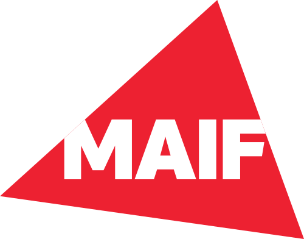

Faisons
connaissance.

Étudiant en science des données — et développeur web à mes heures perdues. Voici l'essentiel.
Je suis étudiant en BUT Science des Données à l'IUT de Poitiers sur le site de Niort. Ce qui me plaît dans ce domaine : comprendre un problème, fouiller les données, puis rendre le résultat clair pour ceux dont ce n'est pas le métier. Mon stage chez Thales m'a fait découvrir les bases de données en environnement industriel, et je poursuis en alternance à la MAIF dès septembre 2026. Entre deux projets data, je conçois des sites web — le design m'importe autant que le code.
Baccalauréat Général
Lycée Haut Val de Sèvre
Formation générale - Spécialités Mathématiques et Sciences Économiques et Sociales - Option Maths Expertes
BUT Science des Données en cours
Université de Poitiers · IUT de Niort
Statistiques, machine learning, bases de données, Python, R, SQL. À côté des cours : représentant étudiant au conseil d'institut, graphisme et événementiel au BDE.
Stage — Technicien Base de Données
Thales · Cholet
Première expérience en entreprise : gestion, nettoyage et optimisation de bases de données liées à des composants critiques.
Alternance — Data signée
MAIF · Niort
Développement d'outils d'aide à l'analyse de données, en parallèle de la 3ᵉ année de BUT.